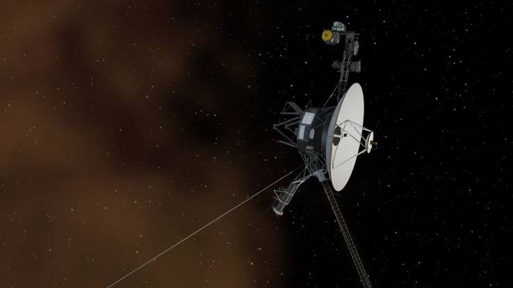
فضا
ویجر ۱
یکی از دورترین ساختههای بشر و یک فضاپیمای تاریخی.
صفحه اختصاصی ←
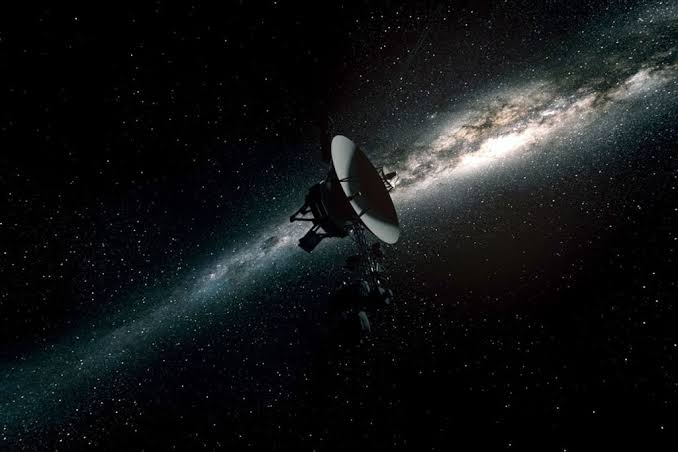
فضا
ویجر ۲
مأموریتی تاریخی برای بررسی مشتری، زحل، اورانوس و نپتون.
صفحه اختصاصی ←
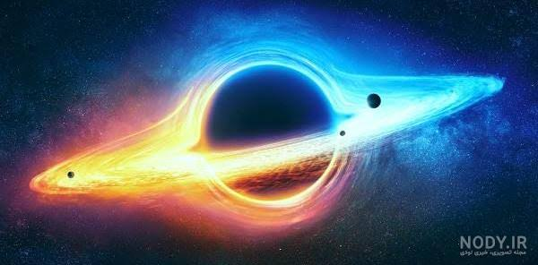
نجوم
سیاهچالهها
ناحیههایی از فضا-زمان با گرانش بسیار شدید.
صفحه اختصاصی ←
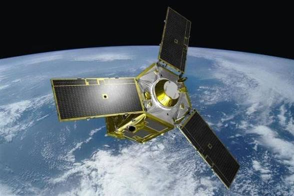
فناوری فضایی
ماهوارهها
برای ارتباطات، ناوبری، هواشناسی و پژوهش استفاده میشوند.
صفحه اختصاصی ←
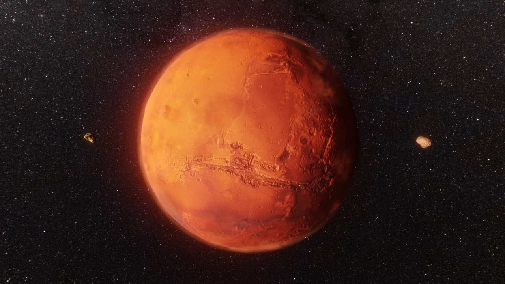
سیارهشناسی
مریخ
سیاره سرخ و یکی از مهمترین اهداف پژوهشهای رباتیک.
صفحه اختصاصی ←
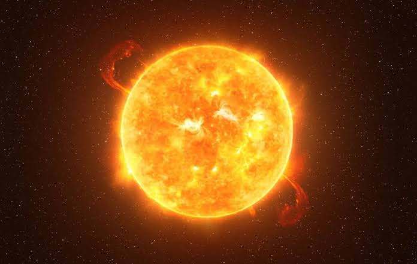
ستارهشناسی
خورشید
ستاره مرکزی منظومه شمسی و منبع اصلی انرژی زمین.
صفحه اختصاصی ←
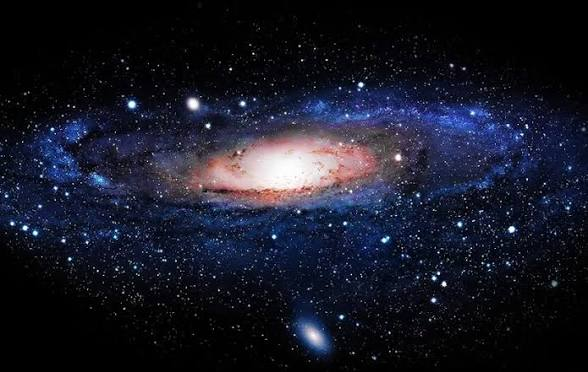
کیهانشناسی
راه شیری
کهکشانی که منظومه شمسی در آن قرار دارد.
صفحه اختصاصی ←
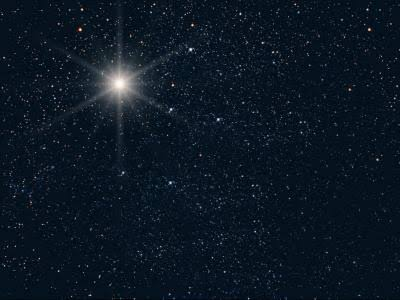
ستارهشناسی
ستارهها
جرمهای درخشانی که انرژی خود را از فرایندهای هستهای میگیرند.
صفحه اختصاصی ←
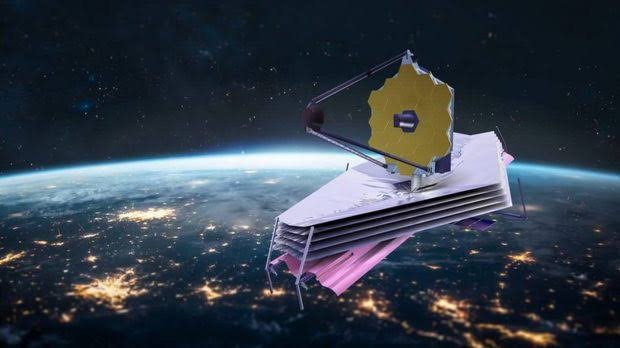
رصدخانه فضایی
جیمز وب
تلسکوپی فروسرخ برای مطالعه جهان دور.
صفحه اختصاصی ←
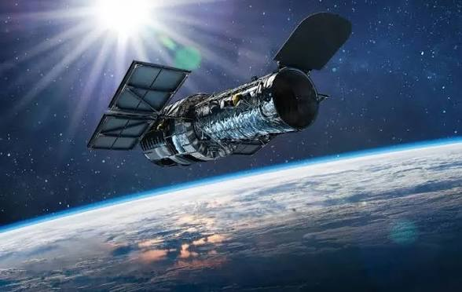
رصدخانه فضایی
هابل
یکی از مشهورترین تلسکوپهای فضایی.
صفحه اختصاصی ←
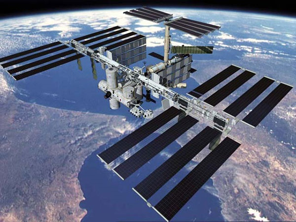
مهندسی فضایی
ایستگاه فضایی بینالمللی
آزمایشگاهی مداری برای پژوهشهای علمی.
صفحه اختصاصی ←
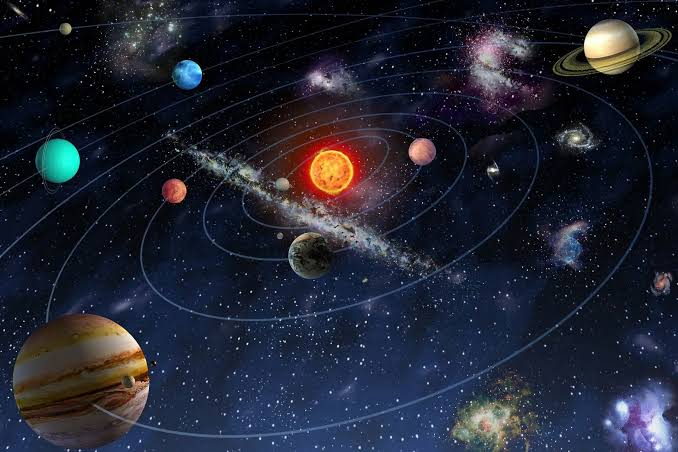
نجوم
منظومه شمسی
سامانهای شامل خورشید، سیارات، قمرها و اجرام کوچکتر.
صفحه اختصاصی ←
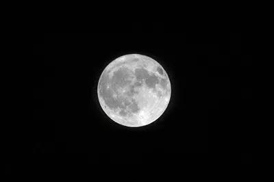
نجوم
ماه
ماه قمر طبیعی زمین است و در جزر و مد نقش دارد.
صفحه اختصاصی ←
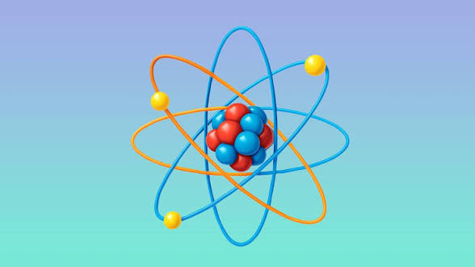
فیزیک
اتم
واحد سازنده بسیاری از مواد که از هسته و الکترونها تشکیل میشود.
صفحه اختصاصی ←
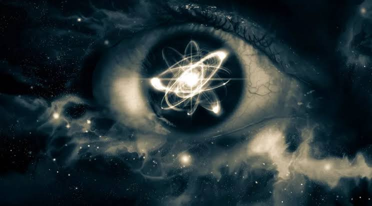
فیزیک
فیزیک کوانتومی
شاخهای از فیزیک برای بررسی ماده و انرژی در مقیاس بسیار کوچک.
صفحه اختصاصی ←
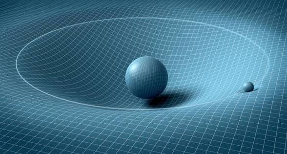
فیزیک
نسبیت
نظریههایی درباره رابطه فضا، زمان، حرکت و گرانش.
صفحه اختصاصی ←
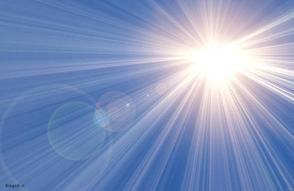
فیزیک
نور
نوعی تابش الکترومغناطیسی.
صفحه اختصاصی ←
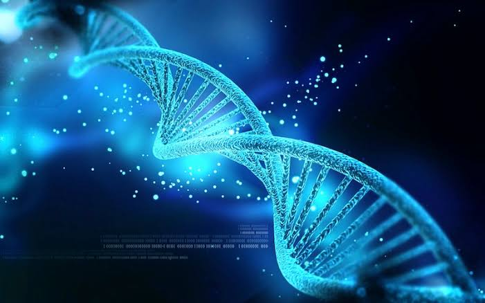
زیستشناسی
DNA
مولکولی که اطلاعات ژنتیکی بسیاری از جانداران را ذخیره میکند.
صفحه اختصاصی ←
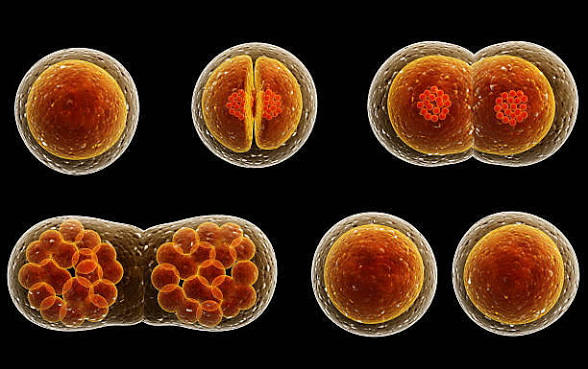
زیستشناسی
سلول
کوچکترین واحد ساختاری و عملکردی بسیاری از جانداران.
صفحه اختصاصی ←
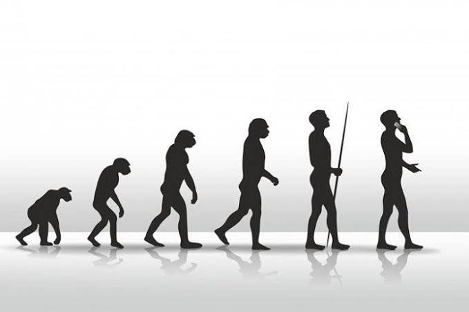
زیستشناسی
تکامل
تغییرات وراثتی جمعیتها در طول نسلها.
صفحه اختصاصی ←
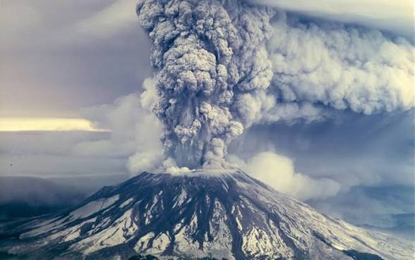
زمینشناسی
آتشفشان
ساختاری که مواد داغ و گازهای درون زمین میتوانند از آن خارج شوند.
صفحه اختصاصی ←
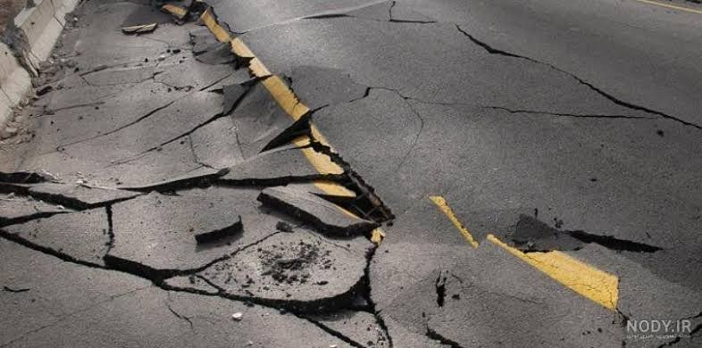
زمینشناسی
زلزله
لرزش زمین بر اثر آزاد شدن ناگهانی انرژی.
صفحه اختصاصی ←
فناوری
هوش مصنوعی
روشهایی برای ساخت سامانههایی که وظایفی مانند تشخیص الگو و پردازش زبان را انجام میدهند.
صفحه اختصاصی ←
فناوری
رباتیک
دانش طراحی، ساخت و کنترل رباتها.
صفحه اختصاصی ←
فناوری
اینترنت
شبکهای جهانی از شبکههای بههمپیوسته برای تبادل داده.
صفحه اختصاصی ←
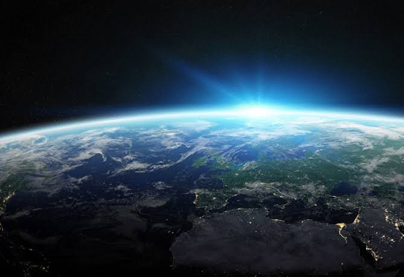
زیستشناسی
زمین
سیارهای که زندگی شناختهشده روی آن وجود دارد.
صفحه اختصاصی ←
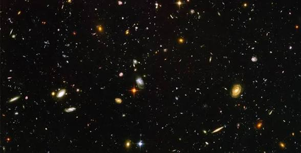
نجوم
کهکشانها
سامانههای عظیمی از ستارهها، گاز، غبار و ماده تاریک.
صفحه اختصاصی ←
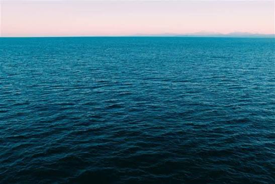
زمینشناسی
اقیانوسها
بخش بزرگی از سطح زمین را آبهای اقیانوسی پوشاندهاند.
صفحه اختصاصی ←
فناوری
هوش مصنوعی و فناوری
آشنایی با کاربردهای هوش مصنوعی در فناوریهای جدید.
صفحه اختصاصی ←
نجوم
رصدخانهها و فضا
آشنایی با ابزارهای مهم مطالعه جهان.
صفحه اختصاصی ←